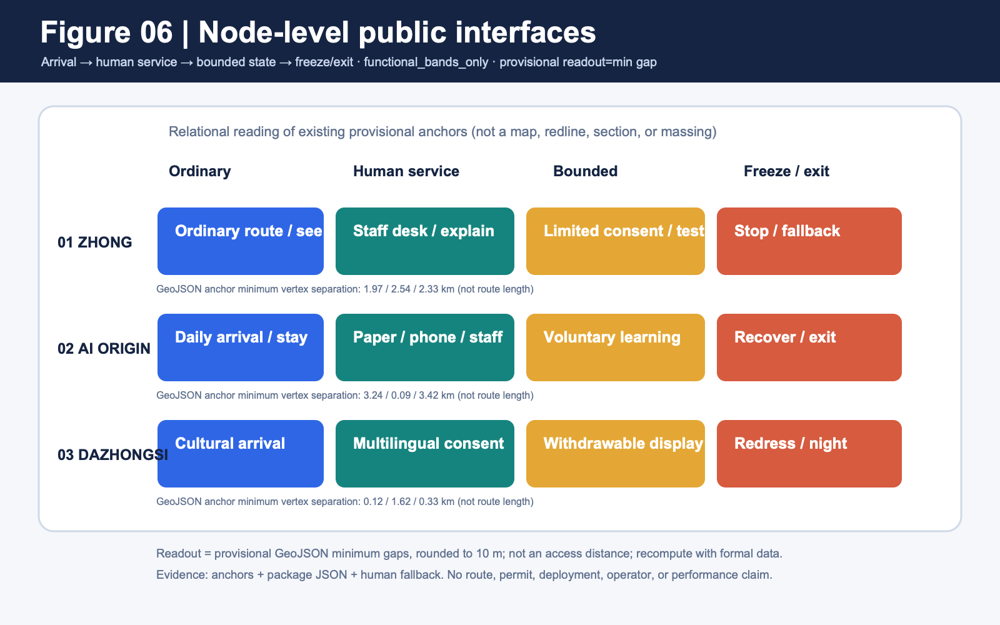
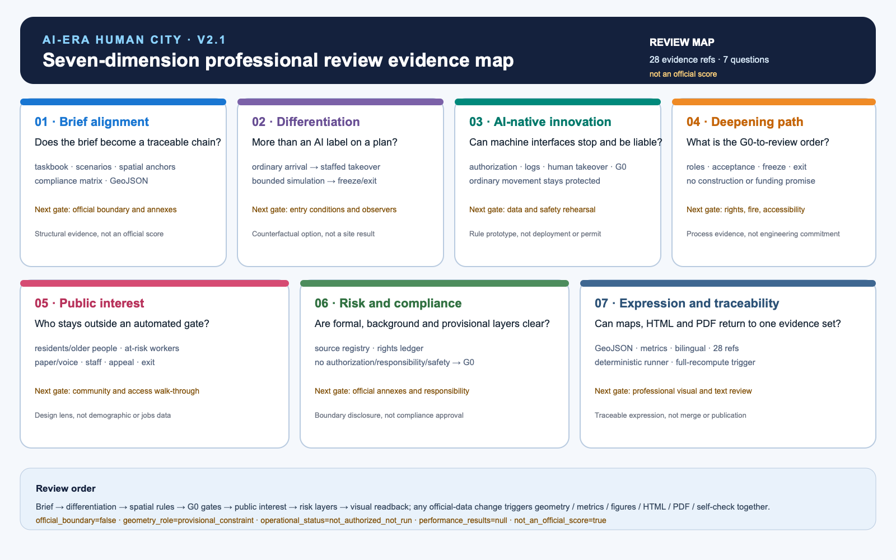
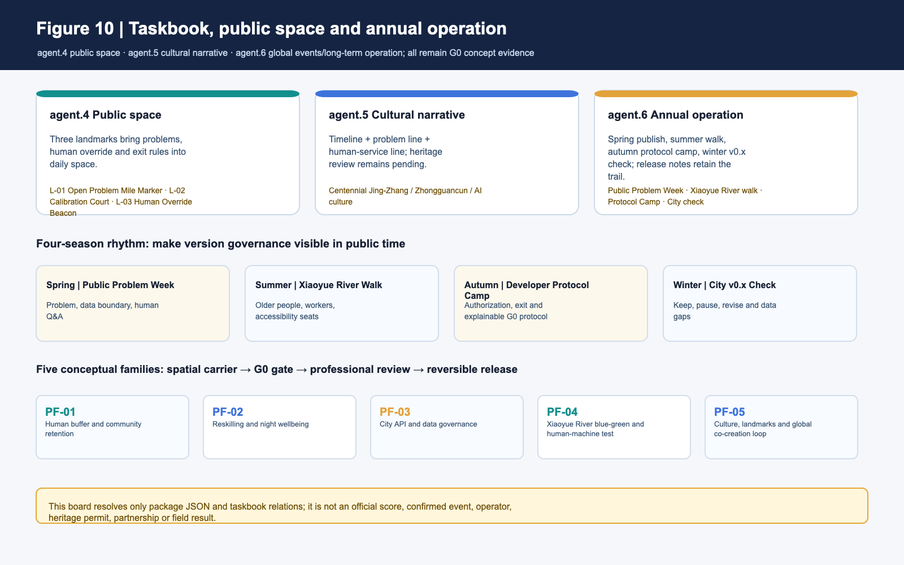
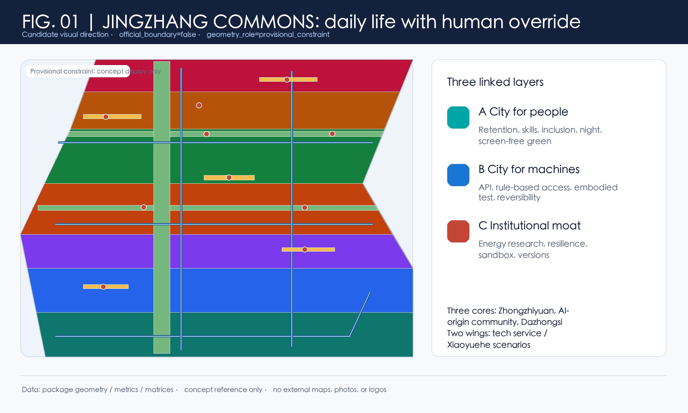
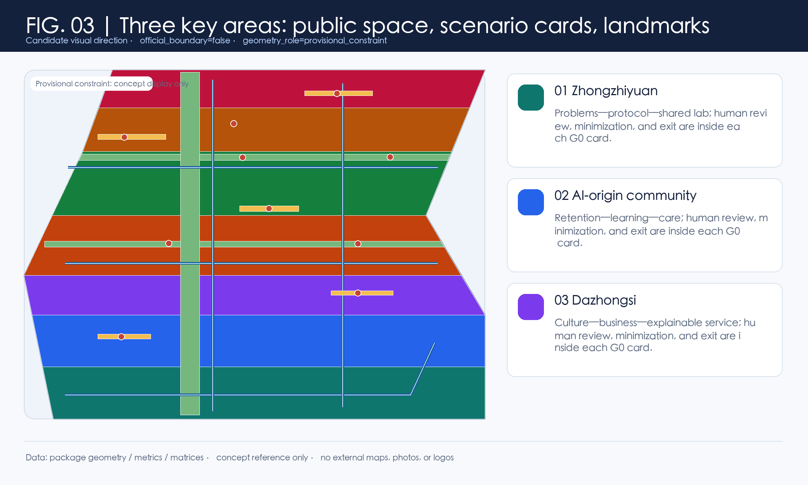
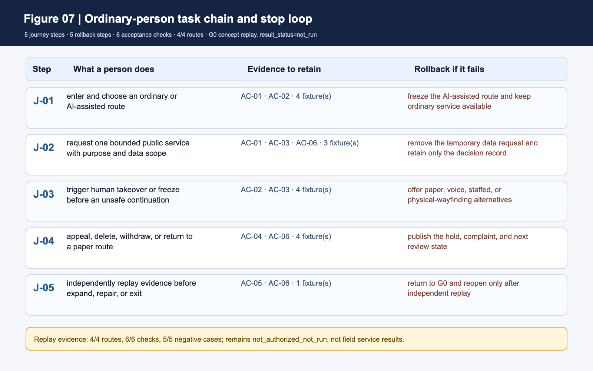
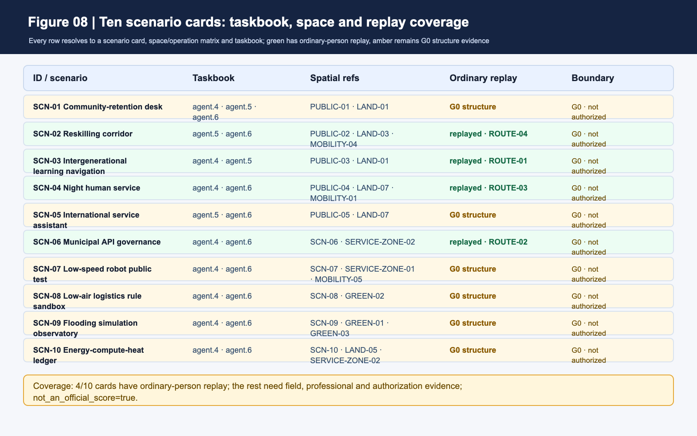
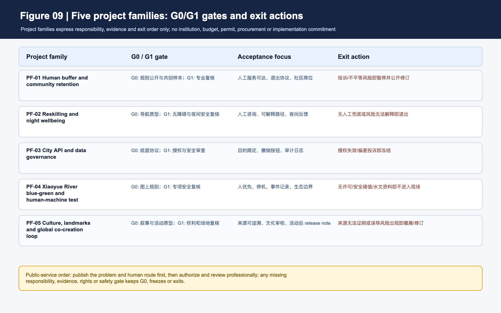

From an AI Showcase to a City for People in the AI Era
From an AI Showcase to a City for People in the AI Era
Candidate name in this submission: JINGZHANG HUMAN-CENTRIC AI COMMONS / 京张人本智城带. This conceptual reference scheme places AI within public rules. Every AI scenario first addresses entry, understanding, refusal, appeal, and the right to co-shape the city, then considers how technology may participate. It joins a human buffer, a machine-callable but publicly governed civic API, institutional safeguards, and versioned governance. It does not claim a statutory plan, official brand, approval, construction feasibility, investment, confirmed policy, or delivered service. 来源 标准 深度
One-page executive brief: prove one public task chain before scaling the belt
The first G0 acceptance unit starts with a complete ordinary-person journey. The person must be able to enter, choose, use, stop, challenge and leave while human and non-device routes remain available throughout. It is a concept-level reference interface only. It presupposes no measured length, road, institution, budget or operator; exact points and engineering scale remain subject to formal boundaries, field walk-through and professional review.
| Ordinary-person path | Visible space/service | Evidence to leave | If it fails |
|---|---|---|---|
| Enter and choose ordinary or AI-assisted route | Dual entry, staffed desk, screen-free/paper/voice alternative | Choice state, version and accessibility observation | Do not open if ordinary route is unavailable |
| Request one public service | Purpose statement, consent prompt and low-stimulation waiting point | Scenario ID, data scope and responsible role | Stay at G0 if consent or responsibility is unclear |
| Trigger human takeover | Physical/human takeover point and visible exit route | Reason, time and human-handling record | Freeze the scenario if takeover is unavailable |
| Raise an objection and leave | Independent redress entrance and deletion/withdrawal notice | Ticket, deadline, disposition and exit state | No G1 progression before closure |
| Independent replay and decide expand/repair/exit | Evidence cabinet, version board and public observer seat | Replay difference, worst-group result and decision record | Return to the paper protocol if it cannot be replayed |
The package claims only a G0 conceptual evidence chain; G1/G2 still require field work, formal data, professional review and authorization. The five-step chain cross-checks the ten scenario cards, human fallback and implementation matrix without turning concept metrics into service performance 空间数据 指标. The offline runner now binds four existing routes to real GeoJSON features: intergenerational learning, civic API, night human service, and reskilling each have an ordinary-person entry. It requires 5/5 journey steps, 5/5 rollback steps, 6/6 acceptance checks, and 4/4 resolving routes; five failing fixtures stop, reject a data call, freeze night expansion, hold automated routing, or return to G0, while three ordinary or human alternatives continue. This proves only local structural replay, not field service, accessibility, staffing, or safety outcomes 空间数据 指标.
Design Basis and Source List
Formal evidence is limited to the locally registered announcement, cleared taskbook, local standard snapshots, and land-use guide. Sources marked unregistered_background_only are retained only to frame questions; none may become local boundary, control, score, or implementation evidence. 来源 来源 标准 空间数据
1. Evidence hierarchy and public-task boundary
The package keeps formal basis, conceptual exploration and “ready to start” separate. A traceable record is not automatically evidence for a local spatial, engineering, service or scoring conclusion; reviewers should read each level's allowed and disabled use together.
| Evidence level | Package examples | Can support | Cannot support |
|---|---|---|---|
| Task and professional standards (formal) | Announcement, cleared taskbook, local standard snapshots | Task coverage, deliverable depth, professional principles and review questions | Official polygons, ownership, engineering conditions, permits or government commitment |
| Source registration and background grading | data/source_registry.json, sources.json, unregistered-background labels | Provenance responsibility, mechanism comparison, question framing and disabled scope | Upgrading international research, cases, media or policy leads into Haidian facts |
| Provisional spatial basis | site_boundary, key_areas, conceptual land use and nodes | Concept placement, relative relationships, topology checks and a whole-package recomputation trigger | Statutory redlines, precise area, road/regulatory controls, existing facilities or siting |
| Package-derived evidence | GeoJSON, metrics.json, scenario cards and G0/implementation matrices | Readable counts, task mapping, node actions, accountability fields and release gates | Resident demand, AI capability, facility capacity, service performance or formal recommendation |
| Paper/policy/case methods | Employment, compute, CFD, governance cases and transport methods | Future variables, risk questions and professional follow-up research | Local causal effects, transferable percentages, return on investment or partnership facts |
| Synthetic replay and design targets | G0 ordinary journeys, failing fixtures, human fallback and design_target | Stop, redress, withdrawal, human takeover and follow-up validation contracts | Field accessibility, staffing, public consent, permission or competition score |
The review rule is: provisional, unknown, design_target and not_authorized_not_run remain in those states. A local runner PASS proves only that a package structure or state machine can be replayed; it does not become field evidence, professional approval, a government implementation finding or an official score.
No publicly verifiable precise official geometry is supplied. The package therefore declares official_boundary=false, geometry_role=provisional_constraint, and boundary_precision=provisional_rough. The EPSG:4548 calculation of 11,412,825.386 sqm is a temporary layer denominator only, never an official redline or legal area. 指标 深度 空间数据
Three-Level Scope Framework
The coordinated-research, overall-design, and three-key-area scopes express three levels of evidence, not interchangeable statutory boundaries. The closer a discussion comes to a site action, the more it requires authorized survey, control plan, property, heritage, water, transport, and data-authorization evidence. 来源 标准 深度
The candidate identity uses the belt name, Commons Nodes, the JINGZHANG COMMONS CYCLE, and a G0 Concept Gate. Its self-drawn unregistered mark joins two open trajectories at a human-override point: rail time, data flow, and the right to pause. It is not an organizer identity. 来源 空间数据 指标
Coordinated Research Area: Industry and Future City Research
The strategy adds a human life-and-rights layer to supply-side and showcase narratives: community retention and small-business negotiation; a voluntary reskilling corridor; accessible analog and digital service; night service and screen-free green space; a governed civic API; reversible use; and versioned review. IMF and WEF figures are international context only, not local employment facts. 空间数据 空间数据 来源 来源 来源 指标
Six comparative cases—Helsinki 3D, Amsterdam TADA, Barcelona DECODE, Singapore Seniors Go Digital, one-north, and the Toronto civic-data discussion—are explicitly unregistered background. They generate transfer questions rather than imported answers: model versioning, data rights, human support, walkable research-life relations, public legitimacy, and exit. 来源 来源 来源 深度 深度
Overall Design Area: Urban Renewal and Regulatory-Plan-Level Urban Design
The conceptual structure is one belt, three cores, two wings, and four spillovers. Zhongzhiyuan frames full-stack problem work and shared labs; the AI-origin community frames retention, reskilling, and intergenerational learning; Dazhongsi frames explainable service and cultural exchange. The Zhongguancun service wing handles knowledge and soft international support; the Xiaoyuehe wing frames blue-green resilience and observable human-machine rules. 来源 空间数据 空间数据 空间数据 空间数据 深度
Seven land-use polygons are generated by shared cuts, covering the submitted provisional scope without gaps or overlaps. They are recomputable conceptual structure, not approved land use. A reversible-blank-use band allows rules and public services to be tested before irreversible commitments. 来源 标准 空间数据 指标
The energy chapter is a research gate, not an engineering claim. A Beijing public document describes differential pricing from 2026 for existing data centres above PUE 1.35; other background material discusses intelligent-compute efficiency. The user-supplied PUE≤1.3 and green-power≥30% lead is not used as a local control because it is not formally verified in the registry. 来源 来源 深度
Detailed Design of Key Areas
Zhongzhiyuan is a problem–protocol–shared-lab concept: an open problem register, reviewable civic-API protocol, human override, and release note before any real data connection. The AI-origin community is a retention–learning–care sequence with a negotiation hall, reskilling living room, intergenerational court, and night-service node. Dazhongsi uses a cultural–business–explainable-service prototype with staffed service, explainable digital service, and retractable display. 空间数据 空间数据 空间数据 空间数据 空间数据 指标 指标 深度
Three low-scale pilgrimage landmarks are the Open Problem Mile Marker, Algorithm Calibration Court, and Human Override Beacon. They display question versions, human revisions, and withdrawal rights, with no role for celebrity, ranking, or monumentality. The Jingzhang heritage-park public-space sequence, east–west stitching, and north–south link are conceptual wayfinding, walking, and blue-green research strategies. They do not establish bridge, tunnel, underground, or construction conclusions. 空间数据 空间数据 标准 指标
v1.3 spatial relation readout: make node interfaces reviewable without pretending they are routes
The previous section answers which public and reversible relationships to compare in the three key areas. This section lowers the reading scale again to one node sequence: ordinary arrival → human explanation/service → bounded state → freeze/replay or exit. visual/assets/ai-era-spatial-interface-plans.json registers existing provisional-geometry anchors, functional bands, entry evidence, and stop conditions for each area. It adds no dimensions, changes no geometry, and does not upgrade a concept interface into an existing facility or engineering proposal. 空间数据 深度
| Node | Existing anchor sequence | Functional bands (no scale; state and order only) | Spatial action on failure |
|---|---|---|---|
| Zhongzhiyuan | MOBILITY-05 → PUBLIC-01 → SCN-06 → GREEN-02 | Ordinary arrival/observation → human explanation/takeover → bounded API simulation → freeze/replay/safe retreat | Freeze the interface when authorization, responsibility, logs, or takeover is missing; retain the ordinary route and paper rule |
| AI Origin Community | MOBILITY-04 → PUBLIC-02 → SCN-02 → GREEN-03 | Daily arrival/dwell → paper, phone, staffed service → reskilling/intergenerational learning → screen-free recovery/exit | Return to human service when the human entry is unavailable or the ordinary route is cut; keep outcomes unknown |
| Dazhongsi | PUBLIC-05 → SCN-05 → SERVICE-ZONE-02 → PUBLIC-04 | Cultural arrival/movement → multilingual explanation/consent desk → withdrawable display/bounded service → redress/freeze/night fallback | Close the display on overreach, unexplained behavior, or uncleared rights; retain ordinary movement and human fallback |
To keep “having anchors” from becoming a slogan, this revision adds a provisional relation readout recomputed from the same GeoJSON. For each adjacent pair it reports the minimum geodesic separation between feature vertices, rounded to 10 m, so a reviewer can question order, near-neighbors, and obvious gaps. It is not a route length, service radius, accessibility conclusion, or engineering dimension; the three values must not be added into an access distance. Once formal boundaries, roads, and field walk-through evidence arrive, the readout, figures, metrics, HTML, PDFs, and self-check must be recomputed together. 空间数据 指标
| Key area | Minimum vertex separation between adjacent anchors (km, same order) | Design use of the readout |
|---|---|---|
| Zhongzhiyuan | 1.97 / 2.54 / 2.33 | Question whether ordinary arrival, human takeover, bounded simulation, and safe retreat have an inspectable spatial relationship |
| AI Origin Community | 3.24 / 0.09 / 3.42 | Separate the daily entry, human service, reskilling node, and screen-free recovery for field review; do not call them connected facilities |
| Dazhongsi | 0.12 / 1.62 / 0.33 | Check whether cultural movement, consent desk, bounded display, and night fallback need field verification |
This node plan adds a reviewer-visible middle layer for how public interfaces carry an ordinary-person path and stop action; it is not a section, plan, or massing drawing. Until road, tenure, heritage, accessibility, existing-facility, and operating evidence is available, all dimensions, capacity, movement performance, and outcome metrics remain missing or unknown. 空间数据 深度

To reduce the jump from narrative to structured attachments, this revision brings four bilingual review boards generated directly from package JSON contracts into one visible set: the ordinary-person journey and stop loop, taskbook–space–replay coverage for all ten scenario cards, G0/G1 gates with exit actions for the five conceptual project families, and the taskbook–public-space–annual-operation triad. They are visual indexes of existing fields, not new field performance, authorization, permit, deployment, or official-score claims; read the result_status=not_run and not_an_official boundaries with the source JSON.空间数据 空间数据
v1.7 spatial evidence atlas: return “having an interface” to one provisional base
This revision returns the node states to two presentation-grade plates. The overview reads the provisional extent, three key areas, green-blue buffers, human-priority lines, and ten scenario nodes together. The key-area plate then zooms the same polygons and places each area's question, four functional bands, and human fallback on one reading surface. The plates are generated from site_boundary, key_areas, roads, green_space, public_space, constraints, and ai-era-spatial-interface-plans.json; they add no boundary, route, section, capacity, facility, permit, or field-result claim.空间数据 空间数据 空间数据
Scenario nodes still return to the provisional anchors in constraints.geojson; the plates do not upgrade them into permits, operations, or formal spatial controls.空间数据
The four bands are not four engineering phases. They are a public-interface order that can be discussed: ordinary arrival, staffed explanation/service, bounded simulation or voluntary learning, and freeze/replay/exit. Paper, phone, staffed, and screen-free alternatives remain visible in every band; not_authorized_not_run, performance_results=null, and stop conditions remain inside the plate's evidence boundary. The three key areas, ten scenario nodes, and nine personas can therefore be read from image to JSON, then to metrics and missing evidence. If formal boundaries, roads, tenure, accessibility, climate, energy, or service baselines arrive, geometry, metrics, figures, HTML, PDFs, and self-check must be recalculated together.指标 指标 指标
One comparable spatial decision delta: Zhongzhiyuan
The four functional bands show how people enter, who takes over, and when the interface freezes. The AI-planning innovation also needs one direct comparison with a spatial choice. This section selects one focus area and does not present the single machine-showcase entrance as an existing condition; it is a counterfactual design option for comparison. The package instead places a staffed explanation desk, public observer seat, visible retreat, and withdrawable test edge within one public interface, protecting ordinary arrival before bounded simulation. This is a design_target, not a built space or AI-performance result. 空间数据 空间数据 空间数据
This spatial delta addresses the AI-planning-innovation dimension without replacing professional measurement. 深度
| Stage | Spatial role that changes | Concrete AI-planning constraint | Status and anchor |
|---|---|---|---|
| Ordinary arrival | Ordinary walking, observation, and accessible questions come first | Machine testing cannot own the only public entrance | design_target; MOBILITY-05 |
| Staffed takeover | The explanation and takeover desk faces the ordinary path | The first move is to ask, refuse, or switch to a person, not invoke an automated call | design_target; PUBLIC-01 |
| Bounded simulation | API simulation sits inside a visible, stoppable test edge | Without authorization, responsibility, logs, and replay, it remains at G0 | design_target; SCN-06 |
| Freeze/replay or exit | Maintenance retreat, ordinary movement, and staffed service stay visible | Withdraw the machine interface, not ordinary public movement or staffed service | design_target; GREEN-02 |
The table expresses how spatial roles change under AI constraints; it is not a dimensional change. No new geometry is added, and design_target is not upgraded into a professional measurement. Once official boundary, rights, accessibility, and field baselines exist, this delta must be recomputed with the metrics, plates, HTML, PDF, and self-check. 空间数据 空间数据 指标
The full-chain recalculation after formal evidence arrives is a metrics-recalculation depth item; before that trigger, the plates support conceptual suggestions and relational questions only.深度
v2.1 Seven-dimension professional review evidence map: turn readability into questions
v2.1 adds no boundary, route, capacity, field data, or policy conclusion. It gathers evidence already distributed across the taskbook, scenario cards, spatial anchors, metrics, sources, and plates into seven questions that a reviewer can actually challenge. visual/assets/ai-era-professional-review-map-v21.json records evidence references, conceptual actions, what is not proven, the next professional gate, and confidence for each dimension. A deterministic runner checks that referenced files exist, formal-basis IDs resolve, provisional boundaries are not overwritten, and every unresolved item has a next gate.空间数据 空间数据
| Review question | Existing evidence and spatial action (concept suggestion) | Not proven | Next gate |
|---|---|---|---|
| Brief alignment | The announcement, agent.1–agent.6, scenario cards, spatial anchors, and compliance matrix return to one entry point | Missing annexes, official extents, and professional interpretation | Recheck together when official boundary, key-area extents, and annexes arrive |
| Differentiation | Ordinary arrival → staffed takeover → bounded simulation → freeze/exit replaces a single AI showcase entrance | Not a site survey or user outcome | Compare entry conditions with a professional team and public observer seat |
| AI-native innovation | City API, silicon right-of-way, and reversibility pass authorization, logs, human takeover, and G0 freeze gates | No claim of API, right-of-way, airspace, or deployment permission | Data authorization, responsibility interface, transport and safety rehearsal |
| Deepening path | Five project families move G0 → professional review → freeze/exit without construction promises | Engineering, funding, operator, insurance, and schedule feasibility | Rights, existing facilities, fire/accessibility, and operating evidence |
| Public interest | Residents/older people, workers at transition risk, night workers and others retain paper/voice, staffed, appeal, and exit paths | Personas are not demographic, jobs, or fairness results | Consented community/access walk-through and night-safety baseline |
| Risk and compliance | Formal/background/provisional layers, rights ledger, and stop conditions remain separate | Does not replace authority, data authorization, or legal review | Official annexes, rights/culture, authorization, and safety responsibility |
| Expression and traceability | Maps, HTML, PDF, GeoJSON, metrics, and bilingual assets point to the same evidence set | Local rendering and self-check do not mean merge, score, or publication | Professional visual/text review; full recomputation when inputs change |
This seven-dimension map is a submission-owned review index, not an official score. It shortens the path from design intent to spatial action, evidence, gap, and next gate for a professional team. All spatial actions remain conceptual suggestions/reference options for professional deepening. official_boundary=false, geometry_role=provisional_constraint, operational_status=not_authorized_not_run, performance_results=null, and not_an_official_score=true remain aligned across the JSON, plates, and runner.空间数据 标准 深度

v1.2 Taskbook–space–operation triad: make agent.4–agent.6 meet on one board
Figure 10 compresses three requirements that are easy to read separately into one conceptual design board. Agent.4 asks how public space and three landmarks carry a problem, a human override, and an exit. Agent.5 asks how Centennial Jing-Zhang, Zhongguancun, and AI culture become an understandable, contestable, retractable wayfinding system. Agent.6 asks how global events and long-term operation leave version evidence through a four-season rhythm, public observation, and release notes. The board uses only existing package JSON and provisional anchors; it does not describe confirmed events. 空间数据 空间数据 深度
| Taskbook entry | Spatial carrier (concept reference) | Annual/operation readback | Missing evidence |
|---|---|---|---|
| agent.4 public space and landmarks | Open Problem Mile Marker, Algorithm Calibration Court, and Human Override Beacon sit on three public-space anchors; they support ordinary movement, human explanation, and exit prompts | Publish the problem and data boundary before an event; retain public objections and withdrawal records afterwards | Formal boundary, public-access conditions, accessibility walk-through, heritage and site review |
| agent.5 cultural narrative | “Railway time — problem version — human override” is the cultural grammar; wayfinding has timeline, problem, and human-service lines | Show only consented, verifiable, retractable roles and versions; no individual or company ranking | Authoritative history, language/form review, and cleared-works register |
| agent.6 global events and long-term operation | Spring publish, summer walk, autumn protocol camp, winter v0.x check; keep meanwhile use and a human entry | Each season releases what is kept, paused, revised, and still missing | Event responsibility, insurance/safety/copyright, participation, and operation evidence |
The five project families in Figure 10 are only a spatial-carrier and G0/G1 research order: human buffer, reskilling and night wellbeing, city API, blue-green and human-machine test, and culture/global co-creation. If authorization, responsibility, professional material, or a safety gate is missing, the proposal stays at G0, freezes, or exits. The board proves only that package fields can be read together; it is not an official score, confirmed event, operator, heritage permit, company partnership, or field result. 空间数据 指标 深度 深度

AI Innovation Ecosystem, Personas, and AI+ Scenarios
Nine personas make the ecosystem accountable: original residents and older people; workers at task-substitution risk; night-shift AI workers; small merchants and one-person teams; developers and researchers; people with access needs and carers; youth, students and people entering the workforce; first-time and international visitors; and public-service and frontline maintenance workers. Each group has a non-negotiable boundary, linked scenarios and provisional spatial anchors, plus human service, explanation, refusal, appeal, exit, and non-device alternatives. 来源 指标 指标 深度
P-07, P-08 and P-09 are not name-only additions: they replay youth learning/work transition, unfamiliar entry and multilingual explanation, and public maintenance/event handling, with an ordinary fallback and stop condition for each. This remains a conceptual design lens, not a demographic survey, accessibility certification, or field fairness result. 指标 指标 空间数据
Ten scenario cards are all G0 concept protocols. Each records users, spatial reference, operational responsibility, data minimization, human fallback, metric, and exit. Three validation contexts—low-speed robots, low-altitude logistics rules, and flood-simulation explanation—do not claim permission, deployment, or real-data access. The civic API similarly begins with catalogue, authorization, logging, appeal, and revocation. 空间数据 空间数据 空间数据 指标 指标
For reviewer-visible reverse tracing, visual/assets/ai-era-traceability-index.json connects each of the ten G0 cards to the applicable agent.4/5/6 tasks, five conceptual project families, seven rubric dimensions, and spatial/metric evidence. SCN-02, SCN-03, SCN-04, and SCN-06 additionally link to four ordinary-person offline replay routes covering reskilling choice, intergenerational learning, night service, and the civic API. It is a submission-owned review crosswalk: it assigns no official score and does not upgrade provisional geometry, design targets, or synthetic replay into field facts. 空间数据 标准 深度
Land Use, Building Scale, and Retain-Renovate-Demolish Strategy
This section translates the temporary geometry into spatial actions that can be compared. The table compares public interfaces, ordinary routes, staffed services, and withdrawable equipment; it does not define development controls or upper massing. The three key areas start with public interfaces and human service, then move to formal-boundary, tenure, fire, municipal, heritage, and existing-building review. 来源 标准 空间数据 指标
| Key area | Concept spatial move | Public interface and reversible relationship | Retain, renew, and review first |
|---|---|---|---|
| Zhongzhiyuan | Link a problem station, shared-experiment front desk, and public observer seat along a human-priority route. Keep a screen-free entry, human takeover point, and withdrawable display at ground level. | Public observer seat and staffed front desk stay adjacent; equipment, maintenance, and testing back-of-house can close without cutting the walking spine | Check existing campus services and public-access conditions before deciding retain, renew, or build. PROV-KEY-001 is not a parcel line. |
| AI Origin Community | Place the reskilling living room, intergenerational learning court, and night human service on one walkable daily route, with public space continuous with the ordinary resident path. | Paper, phone, and staffed entries face the ordinary route; test components remain removable and pausable, and resident service is not account-dependent | Start with accessibility walk-through, resident time-of-use, and community-service inventory. PROV-KEY-002 is not a tenure boundary. |
| Dazhongsi | Form a withdrawable civic living room from cultural interpretation, a public-data consent desk, and a night fallback entrance, while keeping equipment and flows away from the ordinary route. | Rail arrival, quiet route, and service front desk are separated; events and data display can withdraw without occupying daily resident movement | Check heritage, transport, and night-service conditions before setting renewal intensity. PROV-KEY-003 is not a construction area. |
These relationships answer which public and reversible conditions to compare first. They do not answer where construction is permitted or how much can be built. All three areas retain human service, an ordinary route, an accessible alternative, and a withdrawal notice. 空间数据 空间数据 空间数据
Development controls, the retain/renew/demolish schedule, fire review, and engineering feasibility remain unknown before G1. 指标 指标 指标 指标
Transport, Rail, Municipal Infrastructure, and Public Services
Silicon right-of-way is translated into people-first rules: walking and access first; low-speed robots only behind visible boundaries, human supervision, and stop rules; low-altitude logistics only as a paper rule sandbox. No route, rail interface, airspace, utility, or service operation is asserted without missing datasets and review. 空间数据 空间数据 空间数据 指标 来源 深度
Blue-Green Network, Public Space, and Urban Character
Xiaoyuehe sets the resilience threshold for the AI public-space concept. Green layers represent buffers, night screen-free space, and a skills walking chain; flood simulation is an explainable learning interface, not a drainage or flood-control design. The temporary calculated green and public-space layers are 879,519.159 sqm and 123,473.537 sqm. 空间数据 指标 指标
The component library includes a human desk, dual-channel wayfinding, reversible test boundary, screen-free seating, modular data/power box, and question version plaque. The cultural narrative joins Jingzhang rail memory, Zhongguancun innovation, and AI culture through the phrase Build with people, verify in public. Heritage content and placement remain subject to cultural review. 来源 标准 空间数据 深度
Renewal Projects, Implementation Policy, and Phasing
Five conceptual project families—human buffer/retention, reskilling/night health, civic API/data governance, Xiaoyuehe blue-green human-machine testing, and culture/global commons—each state role types, data preconditions, resource-intensity class, G0/G1 gates, acceptance metrics, and exit protocol. They remain conceptual and do not constitute project approval, budget, policy, or construction plans. 空间数据 指标 深度
Phase–participant–acceptance gates (concept v0, not a construction promise)
Each project family moves through three phases with explicit responsibility boundaries. G0 is jointly reviewed by local/planning and public-service roles, community/resident representatives, accessibility and cultural specialists for the problem, authorization and human-equivalent service. G1 is run by pilot operators, maintainers, a data-protection role and a public observer seat as a small reversible test. G2 is decided by professional reviewers, procurement/insurance and operating/local-accountability roles. Specific institutions, contracts, budgets and approvals remain unknown; this does not claim a confirmed partnership.
| Phase | Concept time window | Participants and prerequisites | Readable acceptance evidence | Exit or fallback |
|---|---|---|---|---|
| G0 problem and authorization | Quarters 0–2 after submission | Local planning, subdistrict, and public-service roles, community seat, accessibility and cultural specialists; complete task crosswalk, source clearance, and human channel | 100% of scenario cards have an accountable role, source, data-minimization and exit protocol; authorization and issue register retained | Unclear authorization, human fallback or rights boundary: remain in research |
| G1 reversible pilot | Quarters 3–4 after submission | Pilot operator, maintainer, public observer seat, independent reviewer, and data-protection role; complete field baseline and professional review | Group-level participation coverage, human takeover, first redress response, incident records, and accessible-route continuity | Any group harmed, unexplained incident or unresolved complaint: freeze and return to human service |
| G2 conditional expansion | Quarters 5–8 after submission | Planning, transport, water, accessibility, safety, energy, and cultural professionals with procurement/insurance, operator, and local-accountability roles | Field data, permits, maintenance SLA, privacy/copyright/cultural review and a retrospective report; model output cannot replace field evidence | Any missing prerequisite: withdraw display/stop expansion; never present concept metrics as outcomes |
A four-season Commons Cycle frames public problem release, Xiaoyuehe co-learning walks, developer protocol camp, and annual v0.x health check/release note. The developer mechanism is problem register → office hours → G0 protocol → human/public review → version note; international conversion is multilingual evidence → due diligence → voluntary reversible exchange. 来源 空间数据 指标
Implementation Process and Participating Roles
To make implementation auditable rather than aspirational, the five conceptual project families use the same G0–G1–G2 gates. The roles below are proposed roles for professional confirmation, not confirmed partners. The structured package remains authoritative for the full fields, family responsibilities, data preconditions, acceptance evidence, and exit protocols in visual/assets/implementation-operation-matrix.json and visual/assets/scenario-space-operation-matrix.json.
| Stage | Proposed participating roles | Required evidence and metrics | Entry / exit rule |
|---|---|---|---|
| G0 paper protocol | proposal team, community representatives, public-service role, data-responsibility role, cultural-review role | public problem, consent scope, equivalent human route, scenario cards, scenario_g0_count, manual_fallback_coverage_ratio | no consent, source, owner or human route means no progression |
| G1 professional review | planning, transport, water, accessibility, privacy, safety, energy and cultural professionals | official geometry or field baseline, permit prerequisites, risk review, accessibility walk-through, recalculated metrics and review record | missing critical data or professional sign-off keeps the work at G0 |
| G2 controlled-operation decision | authorised operator, on-site safety role, independent review role, community observers and complaint channel | responsibility chain, insurance/safety documents, incident log, human takeover, complaint handling record, stop and withdrawal record | only a professional decision after all prerequisites; incident, consent withdrawal or failed metric freezes or withdraws the trial |
This submission claims only a completed G0 conceptual evidence chain; G1 and G2 remain dependent on missing data and professional judgment. The table is not a permit, operator appointment, budget, partnership, road right or deployment claim. The narrative states the stages, participating roles, acceptance metrics, and exit actions, while JSON attachments provide field-level detail.
Metrics, Area Recalculation, and Compliance Matrix
All known spatial values are recalculated from current GeoJSON in EPSG:4548 and rounded once: provisional scope 11,412,825.386 sqm, green layer 879,519.159 sqm, public-space layer 123,473.537 sqm, and land-use coverage 1.000000. The former 0.464 sqm green mismatch is removed through one shared algorithm, rounding rule, and audit file used by prose, figures, HTML, and drawings. 空间数据 指标 深度
The compliance matrix covers every announcement 1.3/1.4/1.5 item plus taskbook agent.1–agent.6 with corrected agent.4 public-space/landmark, agent.5 cultural narrative, and agent.6 global-event/operation mapping. The standard matrix covers mandatory local snapshots; complete depth means complete conceptual evidence, not completed site work. 标准 指标 深度
Risk, Copyright, and Compliance
Boundary, control, data, climate, transport, cultural, energy, and rights gaps are disclosed rather than hidden by imagery. Every scenario has minimization, human review, appeal, and exit; every unregistered background source is formally prohibited from carrying a local planning claim. 来源 空间数据 深度
The asset-level clearance ledger records author, method, third-party content, and clearance for text, geometry, PNG/PDF, SVG, HTML, and citations. No third-party photo, map tile, person, logo, remote font, script, or tracker is packaged. Raster PDF accessibility tags are explicitly a remaining professional-typesetting task; HTML semantic structure, alt text, focus style, and contrast are manually checked without claiming formal certification. 来源 深度
References
- Formal local announcement, taskbook, and standard snapshots. 来源 来源
- Unregistered background context only: IMF, WEF, Beijing policy context, and global comparative cases. 来源 来源 来源







